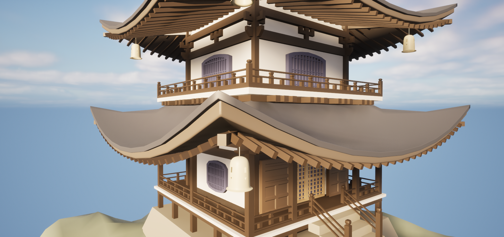
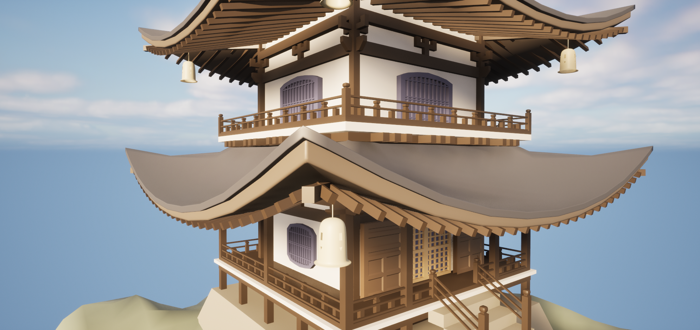

Japanese Temple is my solo project for Modeling II in UCF. I created a small environment of mainly a building.
For this project, I chose to do a Temple due to my interest of environment modeling.
I enjoy the architecture of Japanese Temple and enjoyed the challenge that came with building it in Maya.

 
